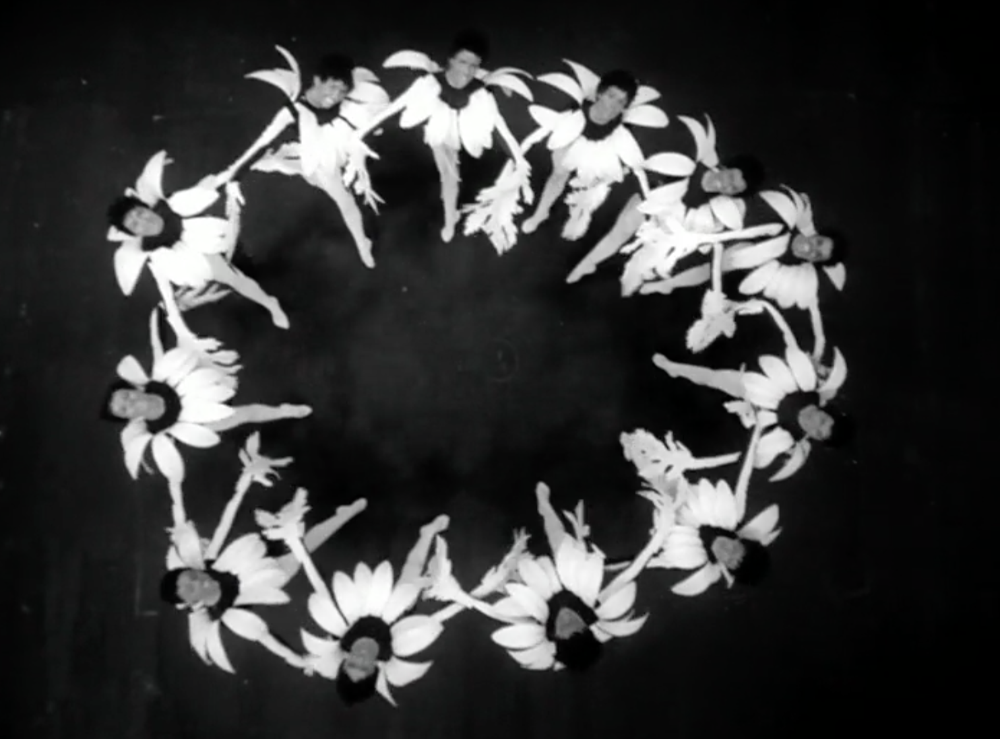

still from LES VERTS PÂTURAGES by Jean-Christopher Averty
MR has translated and created original english subtitles for the following films:
ANITA
Rassoul Labuchin,1981, 45 min
"Centered on the titular Anita – a young peasant girl working as a maid – Rassoul Labuchin’s film denounces the practices of child domestic labor. Made by one of Haitian cinema’s key figures, the story also doubles as a metaphor for the dependency and servitude imposed by U.S. imperialism. In clear defiance of one of the most repressive years of the Duvalier political regime, ANITA was immediately censored and removed from distribution. Undeterred, Labuchin and his team toured the film through provincial cities and the countryside, in a mobile effort of political education and community building. It was hugely popular with Haitian audiences and media as a poetic portrayal which felt true to the socio-economic and political realities of the island – and also widely celebrated when it was released internationally. ANITA brought an importantly gendered perspective to the documentation of the Duvalier years, while also honoring the friendship between the protagonist and another girl, Choupette, in a tribute to the forms of rebellion which might sometimes seem too minor to be registered. It was also the first Haitian film to be shot in Kreyòl." - Anthology Film Archives
RADIO HAÏTI-INTER: LE DROIT À LA PAROLE
Arnold Antonin, 1981, 14 min
"This film is a tribute to the collective struggle of journalists and writers against the censorship of the Duvalier regime. Made while many of them had to leave the island and Antonin himself was in exile in Venezuela, RADIO HAÏTI-INTER recreates one of their typical independent radio broadcasts at a time when these were banned. The mixture of fact and fiction makes this something of a “docu-fiction”, with appearances by Lilianne Pierre-Paul, Compère Philo, Harold Isaac, Jackson Pierre-Paul, Vivianne Nicolas, Henry Alphonse, and Raymond Davius. Even at the heights of repression, this speculative experiment created an imaginary opening for subversive voices which the government never succeeded in fully silencing." - Anthology Film Archives
WILLAIM KLEIN SHORTS
William Klein, 1962-1964, 90 min
"Born and raised in NYC, William Klein relocated permanently to France in 1948, where he would create the body of photographic and cinematic work for which he is justly renowned. But there is one relatively ignored corner of his filmography: the films he made for French TV in the early-to-mid 1960s. Created for the news magazine show “Cinq colonnes à la une”, LE BUSINESS ET LA MODE (1962), LES TROUBLES DE LA CIRCULATION (1962, 15 min), and GARE DE LYON (1963, 12.5 min) find Klein investigating various dimensions of French culture. For WILLIAM KLEIN AUX GRANDS MAGASINS (1964, 44 min), which was aired as part of the long-running TV series “Les femmes aussi”, Klein films Simone Signoret as she wanders through a department store and interviews various women she encounters there." - Anthology Film Archives
PLEIN SUD
Luc Béraud, 1981, France, 94 min
"Luc Béraud described his second feature as a cross between “Malcolm Lowry, Simenon, and Raymond Queneau,” but even that fails to capture the rollicking weirdness of this offbeat comedy that would be a paint-by-numbers steamy romance in less original hands. Spending half his time onscreen partially or fully naked, Dewaere stars as a married professor who drops everything to follow an exquisite seductress (played by Clio Goldsmith) to Barcelona. There’s only one problem: outside of sexual chemistry, the egghead and the ditz have nothing in common. A deep cut for fans of Buñuel and cinematic oddities of every kind." - L'Alliance NY
LES VERTS PÂTURAGES
Jean-Christophe Averty, 1964, 108 min
"Based on the play by American playwright Marc Connelly, LES VERTS PÂTURAGES was made for French television by Jean-Christopher Averty, a longtime radio and television director whose television productions were often highly experimental. A typically stylized and visually daring piece, LES VERTS PÂTURAGES presents a boldly modernized version of the Old Testament, here featuring an all-Black cast – including Les Griots luminaries and frequent filmic collaborators Robert Liensol, Théo Légitimus, Med Hondo, and Georges Hilarion – and set to a vibrant soundtrack of jazz tunes." - Anthology Film Archives
still on previous page from RADIO HAÏTI-INTER: LE DROIT À LA PAROLE by Arnold Antonin